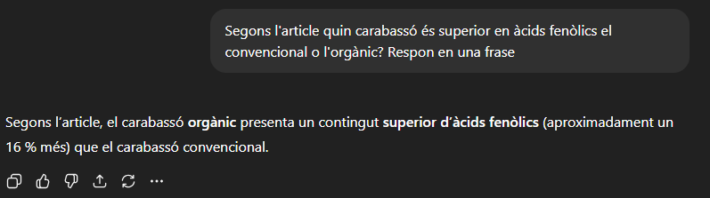

He trobat diferents articles científics que estudien el carbassó. A continuació, els presento amb referències en format APA7.

Observem que l'àcid ascòrbic és més alt en BIO 2013, però en 2014 el convencional domina. Els carotenoides totals mostren tendència semblant. Conclusió: lleuger avantatge per BIO segons minerals.

ChatGPT-5 només destaca l'àcid ascòrbic, sense matisar les diferències generals.


L’orgànic mostra més àcid gal·lic, clorogènic i minerals en la majoria de casos; el convencional només destaca en àcid p-cumàric.

ChatGPT-5 coincideix en què l'orgànic té més minerals.


Fertilització nitrogenada eleva clorofil·la en convencional; en general, BIO i convencional semblen igualats.

ChatGPT-5 falla en afirmar que l'article no mostra dades sobre minerals.
La majoria de gràfiques mostren superioritat del convencional en vitamines.
ChatGPT-5 s’equivoca; l'article mostra que el convencional és millor en minerals.

Valors similars entre orgànic i convencional; rendiment i vitamines lleugerament més alts en convencional.


ChatGPT-5 encerta: fertilitzant augmenta minerals en orgànic.
En la majoria d’aspectes, el convencional és superior en vitamines i minerals.
ChatGPT-5 no té raó: l'article sí que mostra dades sobre minerals.